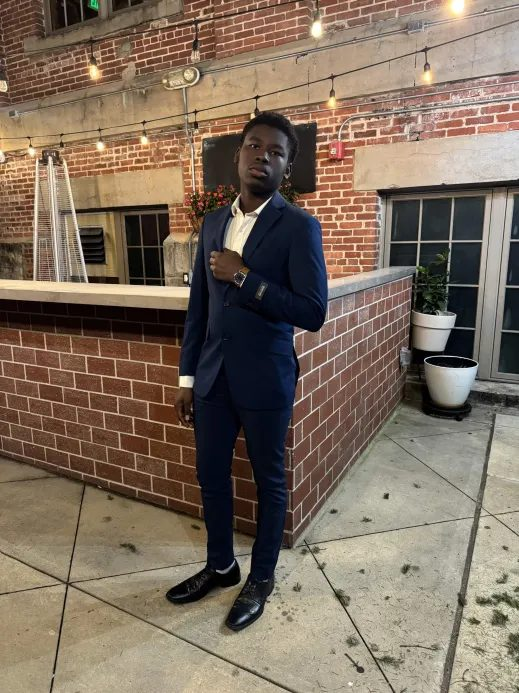
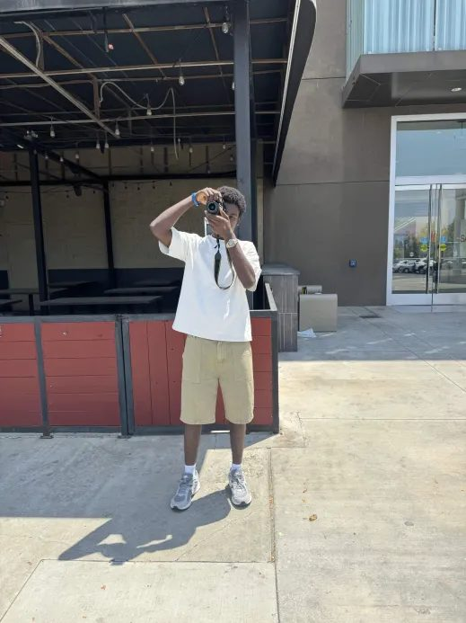
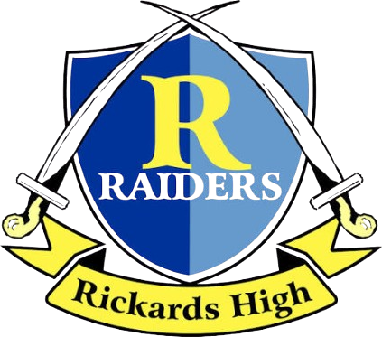
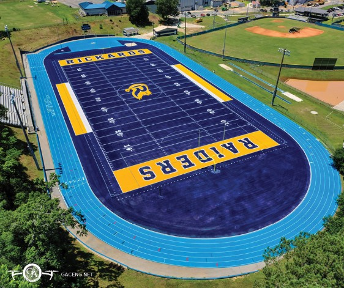

School, research curiosity, sport, and building all sit in the same place for me:
practice, observation, and trying to make useful things with care.
track seasonpractice made visible

formal framepresentation matters

camera daynoticing details

01 / school
IB Student at Rickards
James S. Rickards High School, Tallahassee. IB coursework gives the page its academic base: long assignments, hard questions, and learning to stay patient with complicated work.
02 / research direction
Photophysics, solar energy, chemistry.
Interested in how lab questions become materials, energy ideas, and real-world engineering decisions. This is the direction I want to keep building toward as I get more lab exposure.
Build it small. Make it useful. Make it cleaner tomorrow.

03 / athletics
Track and cross country
800m, mile, and 5K training. Running keeps the work honest because progress has nowhere to hide, and every week leaves evidence.
04 / building practice
JOAM projects
CivilSense, CrashLab, OlympiadCoach, SmartPlace, and this site. Different forms, same instinct: make ideas easier to understand and use.